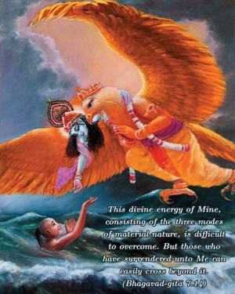
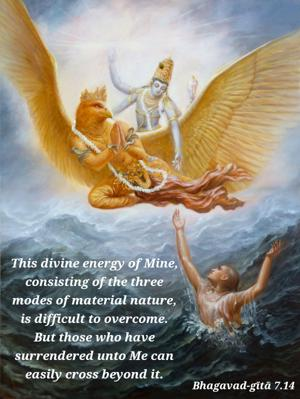

This divine energy of Mine, consisting of the three modes of material nature, is difficult to overcome. But those who have surrendered unto Me can easily cross beyond it.


The Supreme Personality of Godhead has innumerable energies, and all these energies are divine. Although the living entities are part of His energies and are therefore divine, due to contact with material energy their original superior power is covered. Being thus covered by material energy, one cannot possibly overcome its influence. As previously stated, both the material and spiritual natures, being emanations from the Supreme Personality of Godhead, are eternal. The living entities belong to the eternal superior nature of the Lord, but due to contamination by the inferior nature, matter, their illusion is also eternal. The conditioned soul is therefore called nitya-baddha, or eternally conditioned. No one can trace out the history of his becoming conditioned at a certain date in material history. Consequently, his release from the clutches of material nature is very difficult, even though that material nature is an inferior energy, because material energy is ultimately conducted by the supreme will, which the living entity cannot overcome. Inferior, material nature is defined herein as divine nature due to its divine connection and movement by the divine will. Being conducted by divine will, material nature, although inferior, acts so wonderfully in the construction and destruction of the cosmic manifestation. The Vedas confirm this as follows: māyāṁ tu prakṛtiṁ vidyān māyinaṁ tu maheśvaram. “Although māyā [illusion] is false or temporary, the background of māyā is the supreme magician, the Personality of Godhead, who is Maheśvara, the supreme controller.” (Śvetāśvatara Upaniṣad 4.10)
Another meaning of guṇa is rope; it is to be understood that the conditioned soul is tightly tied by the ropes of illusion. A man bound by the hands and feet cannot free himself – he must be helped by a person who is unbound. Because the bound cannot help the bound, the rescuer must be liberated. Therefore, only Lord Kṛṣṇa, or His bona fide representative the spiritual master, can release the conditioned soul. Without such superior help, one cannot be freed from the bondage of material nature. Devotional service, or Kṛṣṇa consciousness, can help one gain such release. Kṛṣṇa, being the Lord of the illusory energy, can order this insurmountable energy to release the conditioned soul. He orders this release out of His causeless mercy on the surrendered soul and out of His paternal affection for the living entity, who is originally a beloved son of the Lord. Therefore surrender unto the lotus feet of the Lord is the only means to get free from the clutches of the stringent material nature.
The words mām eva are also significant. Mām means unto Kṛṣṇa (Viṣṇu) only, and not Brahmā or Śiva. Although Brahmā and Śiva are greatly elevated and are almost on the level of Viṣṇu, it is not possible for such incarnations of rajo-guṇa (passion) and tamo-guṇa (ignorance) to release the conditioned soul from the clutches of māyā. In other words, both Brahmā and Śiva are also under the influence of māyā. Only Viṣṇu is the master of māyā; therefore He alone can give release to the conditioned soul. The Vedas (Śvetāśvatara Upaniṣad 3.8) confirm this in the phrase tam eva viditvā, or “Freedom is possible only by understanding Kṛṣṇa.” Even Lord Śiva affirms that liberation can be achieved only by the mercy of Viṣṇu. Lord Śiva says, mukti-pradātā sarveṣāṁ viṣṇur eva na saṁśayaḥ: “There is no doubt that Viṣṇu is the deliverer of liberation for everyone.”